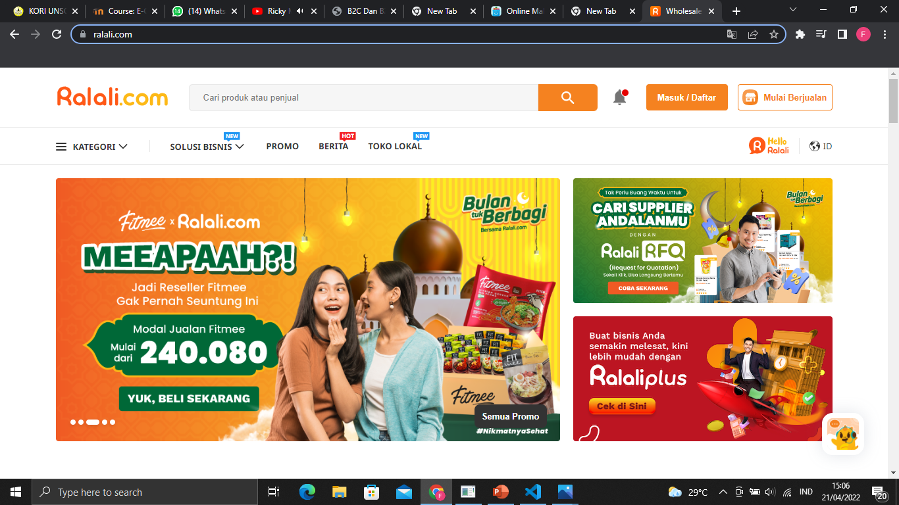
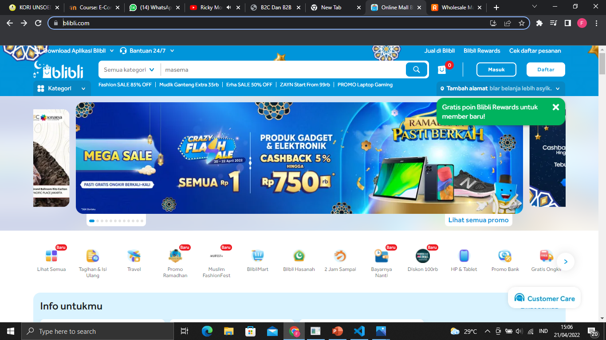

Ralali merupakan marketplace B2B (business to business) yang bisa menghubungkan pemasok produk dan pelaku bisnis melalui situs online maupun aplikasi mobile. Berdiri sejak tahun 2013, Ralali juga memiliki fitur RFQ (Request for Quotation), yang bisa membantu para buyer dalam mencari produk-produk yang tidak tersedia di situs/aplikasi Ralali.
Pada mulanya Ralali fokus menjual produk Industri yang terdiri dari produk maintenance, repair, and operations (MRO). Setelah tahun 2015, Ralali mulai memperluas kategori produk hingga ke produk industri kesehatan, peralatan usaha restoran, fashion & kecantikan, Horeca, dan 8 kategori lainnya. Pada tahun 2017, Ralali mengeluarkan fitur baru bernama 'RFQ' yang digunakan untuk memfasilitasi permintaan produk bisnis yang tidak umum dan tidak tersedia di situs/aplikasi Ralali. Saat ini Ralali telah memiliki memiliki 11.000 supplier tepercaya, 135 ribu pelanggan, 250 ribu produk, dan 2 juta pengunjung situs per bulan.
Blibli.com adalah produk pertama PT Global Digital Niaga yang merupakan anak perusahaan Djarum di bidang digital yang didirikan pada tahun 2010. Blibli merupakan perusahaan e-commerce asli Indonesia yang fokus dalam membangun ekosistem berbelanja pilihan konsumen dan institusi melalui platform perdagangan omnichannel yang aman untuk setiap gaya hidup yang terpercaya.
Sejak berdiri pada 2011, Blibli menghadirkan produk terkurasi melalui kerja sama dengan para penjual handal dan kemitraan dengan merek-merek ternama. Saat ini, Blibli menghadirkan 20 kategori produk dengan puluhan juta pilihan produk berkualitas dari ratusan ribu mitra. Blibli juga menjadi e-commerce dengan pilihan pembayaran dan pengiriman terlengkap di Indonesia, serta dikenal sebagai penyedia layanan gratis ongkir dan jaminan produk orisinal.
Model B2B fokus pada penyediaan produk dari satu bisnis ke bisnis lainnya. Meskipun banyak bisnis ecommerce di area ini adalah penyedia jasa/layanan, Anda juga akan menemukan perusahaan software, perusahaan supplier dan pemasok perabot kantor, perusahaan hosting, dan berbagai model bisnis ecommerce lainnya dari sektor ini. Sedangkan Sektor ecommerce B2C (business to consumer) adalah model bisnis yang lazim dilakukan di pasar ecommerce. Bahkan sektor B2C adalah model bisnis yang selalu ada dipikiran orang saat mendengar kata ecommerce. Transaksi ecommerce B2C menyerupai model ritel tradisional, di mana bisnis menjual jasa/produk kepada individu, namun bisnis dijalankan dengan platform online alih-alih dengan toko fisik.
Dengan kata lain, bisnis jenis ini berhubungan langsung dengan konsumen bukan perusahaan atau bisnis lainnya. Sebagai contohnya, Anda memiliki bisnis makanan. Lalu ketika Anda menjual makanan kepada konsumen perorangan, berarti bisnis Anda B2C. Tetapi jika Anda menjual makanan dalam jumlah besar kepada bisnis lainnya, berarti bisnis Anda adalah B2B.
Biasanya perusahaan B2B lebih dekat pada sektor industri , sedangkan B2C lebih berfokus pada pengguna atau pelanggan. Pendekatan pemasaran digital pada kedua jenis perusahaan tersebut akan berbeda, yang terkait dengan karakter saluran pemasaran digital.
Dari hasil hal tersebut, maka dapat dipahami perbedaan pada keduanya:
1. B2C lebih Customer Centric, sedangkan Business to Business lebih berfokus kepada industri.
2. Pendekatan media sosial berbeda diantara kedua jenis usaha tersebut, sehingga harus disesuaikan pada masing-masing karakteristik sosial media.
3. Solusi dan referensi pengalaman lebih penting pada B2B dibanding pada B2C.
4. Social Public Relation tidak terlalu diperlukan pada jenis B2B. Akan Tetapi pada B2C Social Public Relation merupakan bagian yang tidak dapat dipisahkan dari program marketing secara keseluruhan.
Landing Page Ralali
Landing Page Blibli
Ralali
Blibli
Ralali
Blibli
Ralali
Penjual akan mengirimkan barang yang dibeli sesuai dengan inputan alamat atau lokasi yang diinginkan pembeli dengan pilihan 2 Ekpedisi yaitu SAP Express Reguler atau IJX Indah Jaya Express.
Blibli
Distribusi barang dari Penjual ke Market lalu ke Pembeli, setlah produk siap dikirim maka barang akan dikirimkan melalui perantara kurir dengan bertahap. Jenis barang yang dikiirmkan dan lokasi pengirimian barang berdasarkan data yang diinput pada market. Barang akan sampai ke tangan Pembeli.
Ralali
Dari segi security and control, Ralali.com telah menggunakan security system terupdate yang dapat menjamin kerahasiaan database pelanggan. Semua data pelanggan menjadi lebih aman. Website Ralali.com luncurkan fitur-fitur terbaru yang dapat menunjang kebutuhan pelanggan dalam berbelanja. Di mulai dari fitur New Side Banner dan New Extra Sliding Banner yang dapat memberi kemudahan pelanggan Ralali.com untuk menemukan berbagai promo menarik yang sedang berlangsung. Selain itu, di dalam website Ralali.com terdapat fitur New Notification yang diperuntukkan agar customer tidak ketinggalan info promo dan transaksi Ralali.com dengan rutin mendapatkan notifikasi terupdate. Tak hanya itu, Ralali.com memfasilitasi News Section yang didesain sedemikian rupa bertujuan agar pelanggan Ralali.com dapat berbelanja sambil membaca berita. Di dalamnya tidak hanya terdapat berita mengenai Ralali.com, namun terdapat banyak kategori menarik lainnya, seperti peluang usaha, kisah sukses, tips bisnis, dan berbagai insight menarik lainnya.
Blibli
Platform dagang online Blibli.com memperkenalkan fitur terbaru Click&Collect untuk memperkuat strategi penjualan dari online ke offline atau lazim disebut O2O. Ketika Anda selesai berbelanja di fitur Click&Collect, pelanggan tidak perlu menunggu barang diantar kurir logistik, melainkan bisa langsung mengambil barang di toko seperti berbelanja konvensional. Fitur Click&Collect dapat digunakan dari aplikasi Blibli.com. Pengguna dapat berbelanja seperti biasa di platform tersebut, termasuk untuk pembayaran, kemudian mengambil belanjaan di toko. Blibli.com bekerja sama dengan Alfamart untuk fitur Click&Collect. Saat ini teknologi tersebut tersedia untuk gerai Alfamart di Jabodetabek. Salah satu kategori populer di e-commerce, untuk berbelanja lewat fitur Click&Collect, adalah gawai. Blibli.com bekerja sama dengan toko kamera FUJISHOPid antara lain untuk produk lensa, kamera mirrorless, dan action camera. Blibli.com Click&Collect sampai saat ini sudah bermitra dengan 28 merchant berbagai kategori produk di Jakarta, Bogor, Depok, Tangerang, Bekasi, Bandung, Semarang, Surabaya, dan Bali.